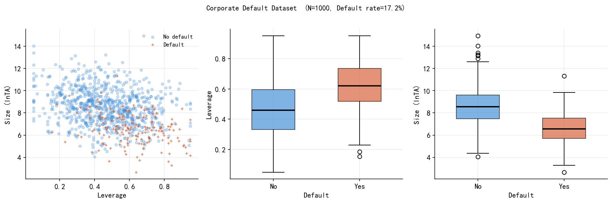
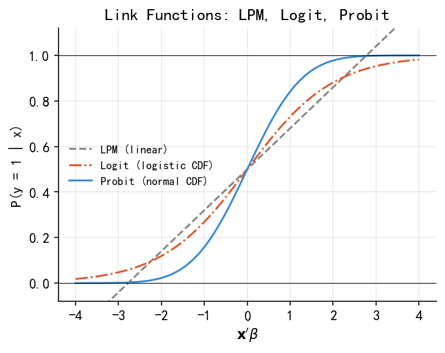
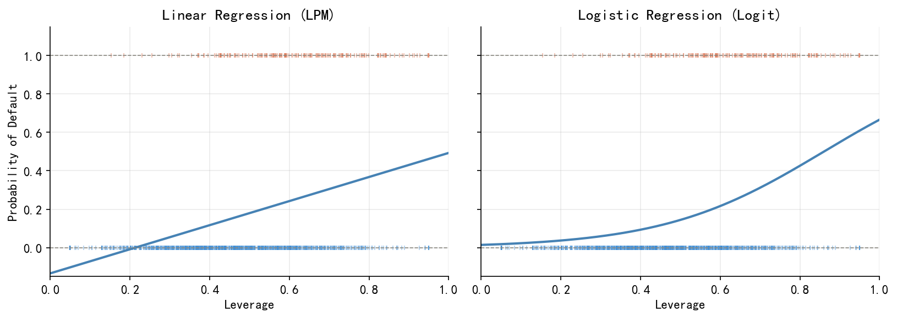
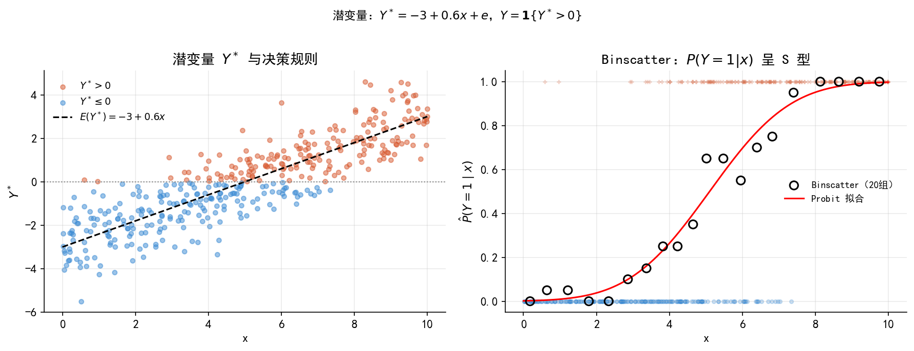
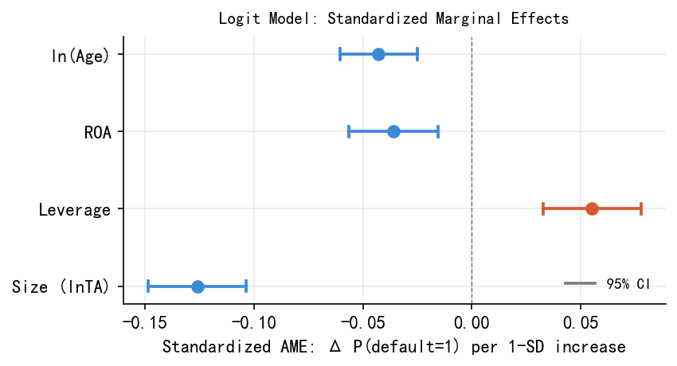
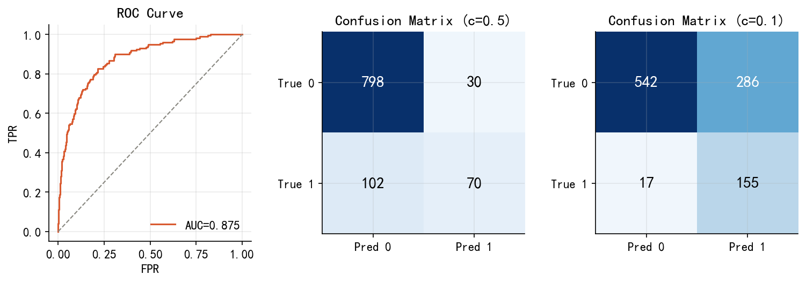

30 二元选择模型
本章目标：建立”条件概率 → 链接函数 → MLE → 边际效应”这条完整的建模逻辑，以上市公司违约预测为贯穿案例，理解 Logit/Probit 模型的原理、估计与解释，并在 Python 中完整实现。
30.1 引言：一个金融预测问题
假设你是一家商业银行的信贷风控分析师。银行每年向数千家上市公司提供贷款，而你的任务是：在贷款发放之前，预测这家公司未来一年是否会发生债务违约。
你手头有每家公司的年度财务数据：
| 变量 | 说明 | 类型 |
|---|---|---|
| Size (lnTA) | 总资产的自然对数，反映公司规模 | 连续 |
| Leverage | 资产负债率，\(= \text{总负债}/\text{总资产}\) | 连续 |
| ROA | 资产收益率，\(= \text{净利润}/\text{总资产}\) | 连续 |
| ln(Age) | 上市年限的对数，反映公司成熟度 | 连续 |
| Industry | 所属行业（制造/地产/金融/科技） | 类别 |
| Ownership | 所有制（国有/民营） | 类别 |
| default | 是否违约（1=违约，0=未违约） | 因变量 |
上市年限对违约风险的影响很可能是递减的：从第 1 年到第 5 年，公司积累管理经验、建立信用记录，风险快速下降；但从第 20 年到第 25 年，边际下降就很小了。对数变换正好捕捉这种非线性关系，同时在模型拟合上也表现更好（AIC 低 5.5 个单位）。
Figure 30.1 展示了样本数据的基本面貌（N = 1000，违约率 17.2%）：违约公司（橙色）集中在规模小、杠杆高的区域；箱线图进一步揭示，违约公司的 Leverage 均值（0.622）显著高于未违约公司（0.460），Size 则相反（6.56 vs 8.59）。

30.2 建模框架：从条件期望到条件概率
30.2.1 条件期望函数（CEF）的局限
标准线性回归建模的是条件期望：
\[\mathrm{E}(y_i \mid \mathbf{x}_i) = \mathbf{x}_i'\beta\]
当 \(y_i \in \{0,1\}\) 时，线性回归可直接解释为线性概率模型（LPM）：
\[P(y_i=1 \mid \mathbf{x}_i) = \mathbf{x}_i'\beta \tag{30.1}\]
LPM 的两个根本性缺陷：其一，拟合值可能超出 \([0,1]\)；其二，边际效应 \(\beta_j\) 是常数，意味着 Leverage 从 0.1 增加到 0.2，与从 0.8 增加到 0.9 对违约概率的影响完全相同——这与直觉不符（见 Figure 30.3）。
30.2.2 条件概率函数（CPF）与四步建模框架
更一般的思路是直接对条件概率函数（CPF）建模：
\[P(y_i \mid \mathbf{x}_i) = f(y_i \mid \mathbf{x}_i;\, \theta) \tag{30.2}\]
CPF 建模的完整步骤，同时也是本章及后续 Tobit、Heckman、Poisson 各章统一的建模语言：
- 设定分布函数：选择能完整刻画 \(y_i\) 取值的概率分布（0/1 变量 → Bernoulli 分布）
- 设定链接函数：将分布参数表示为 \(\mathbf{x}_i\) 的函数，\(\theta_i = G(\mathbf{x}_i'\beta)\)，以反映个体异质性
- MLE 估计：写出对数似然函数，通过数值优化求 \(\hat\beta\)
- 边际效应分析：因链接函数非线性，系数 \(\hat\beta\) 不能直接解释，需计算边际效应
一旦知道 \(y_i\) 的完整概率分布 \(P(y_i \mid \mathbf{x}_i)\)，期望值就完全确定了；反之则不成立。概率分布是比期望值更丰富的信息——这是从 CEF/OLS 转向 CPF/MLE 的根本动因。
30.3 为什么需要链接函数？
我们需要函数 \(G(\cdot)\) 把 \(\mathbf{x}_i'\beta \in (-\infty,+\infty)\) 映射到 \((0,1)\)：
\[P(y_i=1 \mid \mathbf{x}_i) = G(\mathbf{x}_i'\beta), \qquad G:\mathbb{R}\to(0,1)\]
线性概率模型（LPM）：\(G(u)=u\)。OLS 直接估计，可加入高维固定效应，但拟合值可能超出 \([0,1]\)。
Logit 模型：
\[G(u) = \Lambda(u) = \frac{e^u}{1+e^u} \tag{30.3}\]
Probit 模型：
\[G(u) = \Phi(u) = \int_{-\infty}^{u}\phi(t)\,dt \tag{30.4}\]
Figure 30.2 对比了三种链接函数：Logit 和 Probit 在概率 0.2–0.8 之间几乎重合，差异集中在尾部，这解释了为何两者的边际效应在大多数应用中非常接近。


30.4 从潜变量角度理解二元选择
30.4.1 一个具体的决策模型
公司 \(i\) 的”违约净收益”是潜变量 \(y_i^*\)：
\[y_i^* = \underbrace{\mathbf{x}_i'\beta}_{\text{可观测部分}} + \underbrace{e_i}_{\text{不可观测冲击}}\]
我们观察不到 \(y_i^*\)，只能观察到决策结果：
\[y_i = \mathbf{1}\{y_i^*>0\} = \begin{cases}1 & \text{（违约）}\\0 & \text{（未违约）}\end{cases}\]
30.4.2 从决策模型到概率模型
\[P(y_i=1\mid\mathbf{x}_i) = P(e_i>-\mathbf{x}_i'\beta) = 1-G(-\mathbf{x}_i'\beta) = G(\mathbf{x}_i'\beta)\]
链接函数 \(G(\cdot)\) 正是干扰项 \(e_i\) 的 CDF：\(e_i\sim N(0,1)\) → Probit；\(e_i\) 服从逻辑分布 → Logit。
Figure 30.4 展示了潜变量与观测变量的关系：

这个结构是后续复杂模型的基础：Tobit 中 \(y_i=\max(0,y_i^*)\)（截断）；Heckman 有两个方程，选择方程用潜变量决定”是否进入样本”；有序 Probit/Logit 对应潜变量落入不同区间。理解了这里，后续模型的逻辑就是顺水推舟。
30.4.3 参数不可分别识别
令 \(e_i=\sigma\varepsilon_i\)，则只能识别 \(\beta^*=\beta/\sigma\)。Probit 规范化 \(\sigma=1\)，Logit 规范化 \(\sigma=\pi/\sqrt{3}\approx 1.8\)，故 Logit 系数通常是 Probit 系数的 1.6–1.8 倍——两者是不同规范化下的同一个 \(\beta^*\)。
30.5 MLE 估计
30.5.1 对数似然函数
\(y_i\sim\text{Bernoulli}(p_i)\)，\(p_i=G(\mathbf{x}_i'\beta)\)，对数似然为：
\[\ln L(\beta) = \sum_{i=1}^{n}\left[y_i\ln G(\mathbf{x}_i'\beta)+(1-y_i)\ln(1-G(\mathbf{x}_i'\beta))\right] \tag{30.5}\]
直觉：对真实违约的公司（\(y_i=1\)），希望 \(p_i\) 大；对未违约的公司，希望 \(p_i\) 小。MLE 找出让”数据最有可能出现”的 \(\hat\beta\)，通过数值优化（Newton-Raphson 或 BFGS）求解。
30.5.2 估计结果
Table 30.1 报告了完整 Logit 模型的估计结果。
| 变量 | 系数 \(\hat\beta\) | 标准误 | z | p 值 | |
|---|---|---|---|---|---|
| 截距 | 3.664 | 0.751 | 4.88 | <0.001 | *** |
| Size (lnTA) | −0.752 | 0.081 | −9.27 | <0.001 | *** |
| Leverage | 3.037 | 0.655 | 4.64 | <0.001 | *** |
| ROA | −6.400 | 1.893 | −3.38 | <0.001 | *** |
| ln(Age) | −0.485 | 0.106 | −4.56 | <0.001 | *** |
| 地产（vs 制造） | 0.433 | 0.279 | 1.55 | 0.120 | |
| 金融（vs 制造） | −0.112 | 0.295 | −0.38 | 0.706 | |
| 科技（vs 制造） | 0.264 | 0.275 | 0.96 | 0.339 | |
| 国有（vs 民营） | −0.791 | 0.241 | −3.29 | 0.001 | ** |
系数本身是 log odds 尺度，不直观。以 ln(Age) 为例：系数 \(-0.485\) 意味着上市年限翻倍，违约比（odds）乘以 \(e^{-0.485}\approx 0.62\)，降低约 38%。更直观的解释见边际效应部分。
30.6 边际效应
30.6.1 通用公式
\[\mathrm{MPE}_l = \frac{\partial P(y_i=1\mid\mathbf{x}_i)}{\partial x_l} = g(\mathbf{x}_i'\hat\beta)\cdot\hat\beta_l \tag{30.6}\]
其中 \(g=G'\)：Logit 中 \(g(u)=\Lambda(u)[1-\Lambda(u)]\)；Probit 中 \(g(u)=\phi(u)\)；LPM 中 \(g(u)=1\)（常数）。
边际效应依赖于 \(\mathbf{x}_i\) 的取值，不是常数。即使模型中没有显式交乘项，非线性结构也使得：
\[\frac{\partial^2 P}{\partial x_l\partial x_m} = G''(\mathbf{x}_i'\beta)\hat\beta_l\hat\beta_m \neq 0\]
30.6.2 两种报告方式
首选 AME（平均边际效应）：
\[\widehat{\mathrm{AME}}_l = \frac{1}{n}\sum_{i=1}^n g(\mathbf{x}_i'\hat\beta)\cdot\hat\beta_l\]
MEM（均值处边际效应）对虚拟变量无意义，AME 保留样本真实分布信息，且与 LPM 系数高度接近。
30.6.3 三种模型的 AME 对比
Table 30.2 展示了四个核心连续变量的 AME，三种方法高度一致：
| 变量 | LPM 系数 | Logit AME | Probit AME |
|---|---|---|---|
| Size (lnTA) | −0.067 | −0.071 | −0.070 |
| Leverage | 0.289 | 0.288 | 0.282 |
| ROA | −0.609 | −0.607 | −0.584 |
| ln(Age) | −0.052 | −0.046 | −0.045 |
各变量 AME 解读：
- Size：lnTA 每增加 1 个单位，违约概率平均下降 7.1pp
- Leverage：资产负债率每提高 0.1，违约概率平均上升 2.9pp
- ROA：ROA 每提高 1pp（0.01），违约概率平均下降 0.6pp
- ln(Age)：上市年限翻倍（5→10 年或 10→20 年），违约概率平均下降约 3.2pp
粗略地：\(\hat\beta_{Logit}\approx 4.5\times\hat\beta_{LPM}\)，\(\hat\beta_{Probit}\approx 2.5\times\hat\beta_{LPM}\)，\(\hat\beta_{Logit}\approx 1.7\times\hat\beta_{Probit}\)。三组系数本身不可比，但 AME 几乎相同。
30.6.4 标准化 AME：跨变量重要性比较
原始 AME 受变量单位影响，难以直接比较各变量的重要性。标准化 AME（AME \(\times\,\sigma\)）回答的是：该变量增加一个标准差，违约概率平均变化多少？
\[\widetilde{\mathrm{AME}}_l = \widehat{\mathrm{AME}}_l\times\sigma_l\]
Table 30.3 和 Figure 30.5 展示了标准化 AME 的结果：
| 变量 | \(\sigma\) | AME | 标准化 AME | 95% CI |
|---|---|---|---|---|
| Size (lnTA) | 1.768 | −0.071 | −0.126 | [−0.149, −0.104] |
| Leverage | 0.192 | 0.288 | +0.055 | [+0.033, +0.078] |
| ROA | 0.059 | −0.607 | −0.036 | [−0.056, −0.016] |
| ln(Age) | 0.932 | −0.046 | −0.043 | [−0.061, −0.025] |
Size 是影响最大的变量（标准化 AME = −0.126），其幅度是 ROA 的 3.5 倍。Leverage、ROA、ln(Age) 三者量级相近（0.036–0.055）。

30.7 预测概率与分类决策
30.7.1 计算预测概率
\[\hat{p}_i = \Lambda(\mathbf{x}_i'\hat\beta) = \frac{e^{\mathbf{x}_i'\hat\beta}}{1+e^{\mathbf{x}_i'\hat\beta}}\]
两家公司的对比计算：
| 公司 | Size | Leverage | ROA | Age | 行业 | 所有制 | 预测违约概率 |
|---|---|---|---|---|---|---|---|
| A（高风险） | 6.5 | 0.75 | 0.02 | 5 | 地产 | 民营 | 64.0% |
| B（低风险） | 9.0 | 0.35 | 0.08 | 15 | 制造 | 国有 | 0.9% |
公司 A 的违约概率是公司 B 的 68 倍，由规模小、杠杆高、盈利弱、资历浅四重因素共同驱动。
30.7.2 分类决策与阈值选择
分类规则：当 \(\hat{p}_i>c\) 时预测违约。阈值 \(c\) 是业务决策，而非统计决策：
- \(c=0.5\)：最小化错误总数（适合类别均衡场景）
- \(c=0.1\)：保守风控，减少坏账（适合银行——漏报坏账的损失 \(\gg\) 误拒好贷款的机会成本）
ROC 曲线（Figure 30.6）可视化所有阈值下的权衡，AUC = 0.875 是与阈值无关的综合评分。

本数据集违约率约 17%。即使”永远预测不违约”的哑模型，准确率也达 83%！对不平衡数据，应优先关注 AUC，而非准确率。关于混淆矩阵、精确率/召回率、F1 等指标的详细介绍，见第 X 章（机器学习分类方法）。
30.8 混淆变量与模型比较
以所有制（Ownership）为例：
- 单变量 Logit（只含 Ownership）：民营企业违约率 22.2%，国有企业 10.1%，前者是后者的 2.2 倍，系数正且显著
- 多变量 Logit（控制财务特征后）：国有企业系数 = \(-0.791\)，显著为负——相同财务特征下，国有企业违约概率反而更低
Figure 30.7 揭示了原因：民营企业 Leverage 中位数（0.553）比国有企业（0.400）高约 0.15，其较高的无条件违约率本质上是由杠杆差异驱动的，而非所有制本身的直接影响。

在做因果推断时，控制充分的财务特征变量至关重要，否则容易把遗漏变量（杠杆差异）引发的表面相关误认为所有制的直接效应。
30.9 简要总结
\[ \underbrace{y_i\in\{0,1\}}_{\text{Bernoulli 分布}} \xrightarrow{\text{链接函数}} \underbrace{P(y_i=1|\mathbf{x}_i)=G(\mathbf{x}_i'\beta)}_{\text{CPM}} \xrightarrow{\text{MLE}} \hat\beta \xrightarrow{\text{边际效应}} \text{AME / 标准化 AME} \]
三个核心选择
- 链接函数：LPM（因果分析 + 固定效应）vs Logit/Probit（概率预测）——AME 几乎相同
- 边际效应报告：AME 用于解释单变量效应；标准化 AME 用于跨变量重要性比较
- 分类阈值：业务决策，非统计最优化问题
潜变量框架的价值不只是解释 Logit/Probit，更是为 Tobit、Heckman 等后续模型提供统一的理解基础。
30.10 延伸阅读
- James et al. (2023). An Introduction to Statistical Learning, Chapter 4.
- Wooldridge (2010). Econometric Analysis of Cross Section and Panel Data, Chapter 15.
- Hansen (2021). Econometrics, Chapter 25. [PDF]
- Cameron & Trivedi (2005). Microeconometrics, Chapter 14.